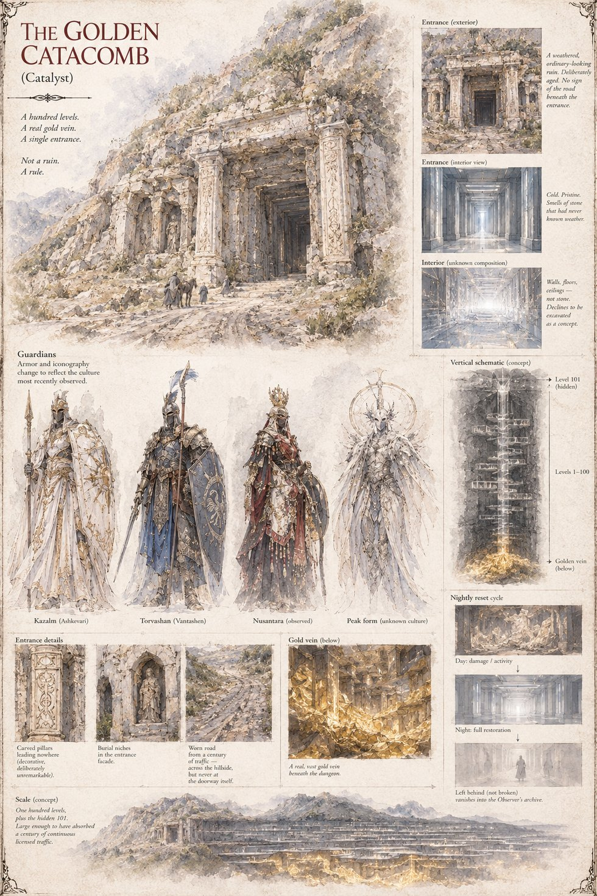

The Golden Catacomb
The Catalyst of Case 0157 · a hundred levels, one entrance
A single engineered structure delivered by the Cultivators as the Catalyst of Case 0157: a hundred levels, a real gold vein at the bottom, and exactly one entrance that no wall, ram, or engineer's cleverness has ever managed to bypass. Its guardians change armor and iconography to reflect whichever culture has most recently come looking, and every level resets completely overnight — damage repaired, the dead reassembled, anything merely left behind quietly gone by morning. Its builder and sole operator keeps a permanent seat at Level 101, and its rarest reward isn't gold at all, but the White Draught. Not a ruin. A rule.
“Not a ruin. A rule.”
Appears in The Stolen Prince War